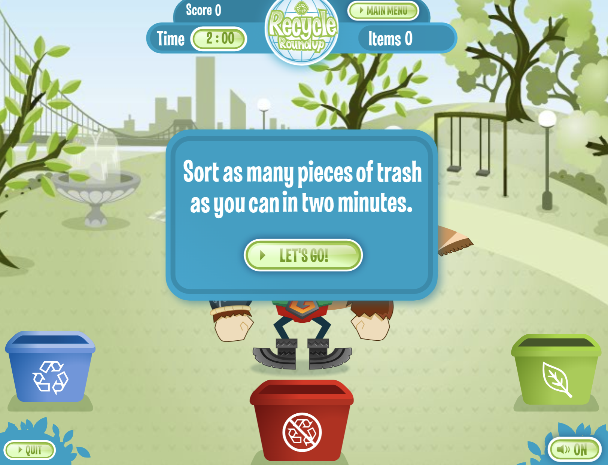
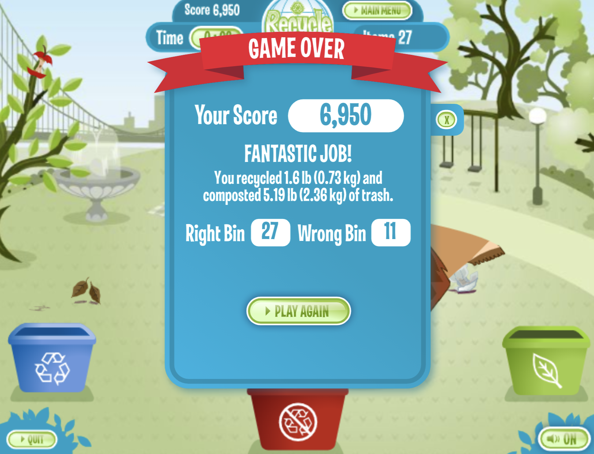

Key Questions to Define the Value of a Game
What is the goal of the Recycle Roundup? Is it clear? Is it compelling to me? Why or why not?
The goal of Recycle Roundup is to put the flying trash in the correct bin in under 2 minutes. The directions are clear to me because it is the opening line before you start to play. In addition, the elements of the game is clear. Your character is at the center of 3 bins. One is for recycling, one is for compost, and the center is for trash. The objective of the game is compelling to me. It is only compelling because I want to recycle more and I want to encourage eeveryone to recycle as well. It is a message that comes with little to no guidance. How do you recycle? is a question I get often. This game does a simple job at telling you how to recycle. At the end of the game, it even tells you how many items you got wrong and how many items you got right. There is feeedback and opportunity to grow in the game. I guess what I am trying to say is that it is compelling to me because I am passionate about recycling.
Screenshot of Directions before GameplayWhat’s the game’s core dynamic? Is it exploration, collection, “race to the finish,” solve—or a blend of two different dynamics such as collection AND race to the finish?
The game's core dynamic is collection and "race to the finish." It is a blend of these two concepts because the character you are playing is collecting information about the different types of trash there is as it falls from the ground. If you do not know how to recycle, you would need to consult another source to tell you how to recycle and how to identify the items. In a way, this game encourages players to look at outside resources to figure out how to recycle (if you don't know already). The "race to the finish" is encouraged by the time limit. You want to recycle as many things as you can in under 2 minutes. If you were to play with others, this game could be a competition among many friends. Who knows how to recycle the best?
Are the rules clear? How do I learn them?
The rules are clear, as shown above in the first image. The rules are displayed before you play the game.
What game mechanics (aka rules) make the game most fun? Which one(s) would I change? What would happen if I did?
The game mechanics that make the game most fun is the time limit. If there were no time limit, the game would be meaningless and it wouldn't be fun. One thing I would change about the game is adding an element where if you put the trash in the wrong bin, or attempted to, the game wouldn't allow it. A warning sign like, this is the wrong bin! would make the game better. It would be make the game better because the player would be quickly notified of their mistake and will be able to learn from the mistake instead of waiting for the end. Below shows an image of my game play and what elements I got wrong, but it does not provide further guidance on how I can fix this or what I got wrong.
Screenshot of My Score and ResultsDo the aesthetics of the game draw me in? What emotional reaction do the aesthetics elicit in me?
The aesthetics of the game draw me in because there are very warm colors. I know this game is inviting me to positively learn about recyclying. The color green is the color of balance, harmony and growth. At least according to this nice website. Since I found this on a children's website I can see how the color scheme of the game can invite children to play this game. The monster in the middle also seems very friendly. I would be his friend.
Is the game “balanced” in the sense that it accommodates different player levels? How?
Recycle Roundup is not "balanced" in the sense that it accomodates different player levels because it doesn't offer that. It is a one-stop game with an optional element of competition among friends. No levels are offered or encouraged.
What’s the balance between strategy and chance? Do I feel like I have control over the outcome by the choices I make in the game or do I feel the outcome is almost all chance?
Players have control over the outcome by the choices they make in the game because it is all about your knowledge on recycling. If a player has no idea how to recycle, this game isn't going to teach you. It may create an environment for a player to look outside the game as resources on how to recycle and what to recycle but the game itself does not provide that. So, this game is really about strategy and less about chance. It is about how you will look up things to recycle within the 2 minute time limit and get all the items recycled without putting it in a different bin. The player is 100% responsible and in control the choices they mistake in the game. Thus, it affects how the game is played and successful.
Is the game cooperative, competitive, or a blend of both?
The game could be competitive. As mentioned, there is a time-limit and if played with friends, it could be a compeititon.
If the game is competitive and I lose, how does this make me feel? Does it motivate me to play again or do I want to avoid playing again so I can avoid losing?
There is no losing in the game. This question is a bit subjective to the player. A player could theoretically lose if they do not collect any points or miss every chance to recycle. Subjectively, a player could lose because they didn't succeed in collecting as much trash as they wanted in the time limit or they put too many items in the wrong bin that they didn't expect or their friends had a much better score than they did. I believe this game leaves players to their own imagination on how it should be played competitively.
If it’s a digital game, how easy is it to navigate? Can I quickly learn by exploring?
This is a digital game that is easy to navigate because it prompts instructions as soon as you launch the play button. In addition, the character is moved by your mouse or trackpad. Players would easily see that their mouse/trackpad movements influence the way the character moves around the screen. Finally, the last step is collecting the trash which is a little intutitve. All you have to do is the click your track/pad or mouse. It picks up the trash and you can click again to dump the trash in the right or wrong bin.
Finally, as a learning game designer, what elements from this game could I use in a game I design?
I believe I can use the theme and objective of this game for a game I design. I am passionate about recycling as a I mentioned before, so using the theme of this game of recycling could be a simple step for me. In addition, the objective of knowing how to recycle and when to recycle is something I could improve on and use for a game I design.